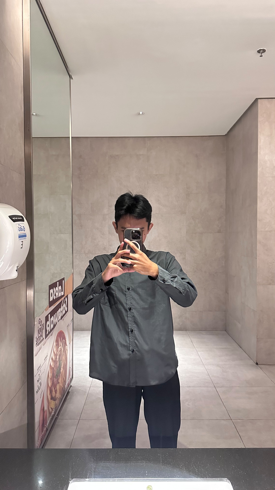
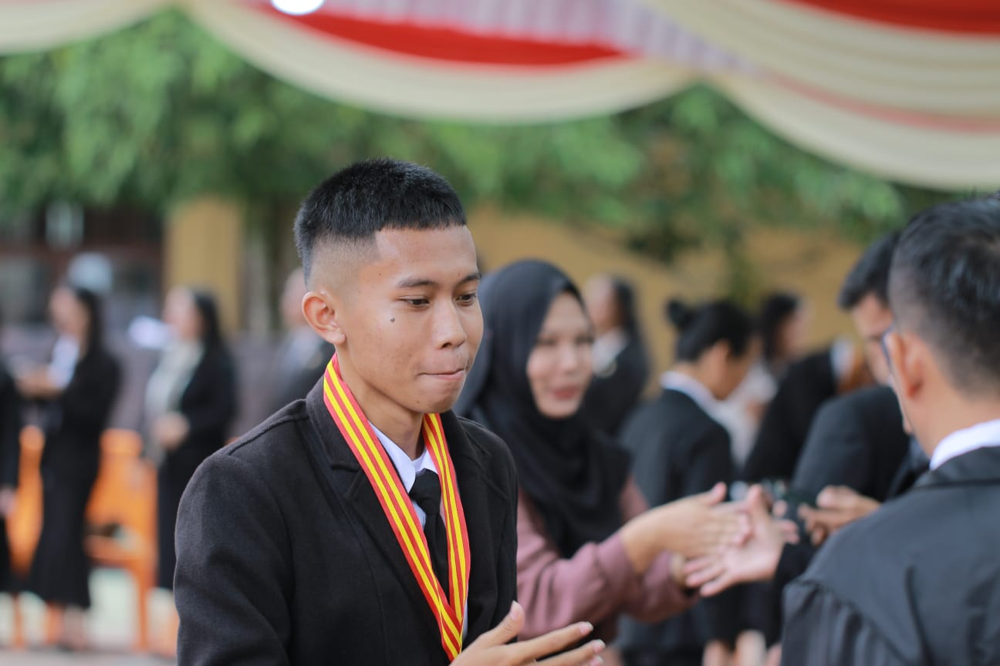
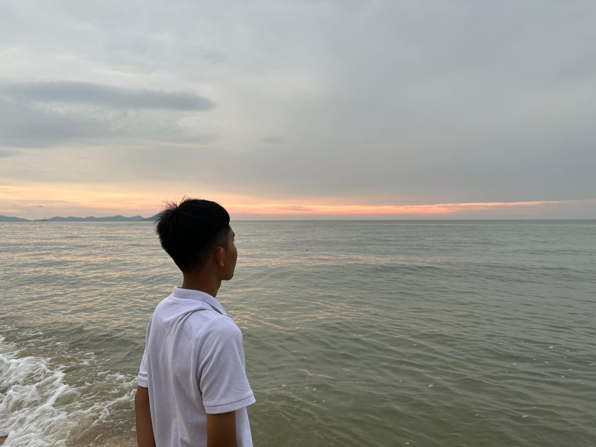

PORTFOLIO 2026
DIKY FIRERZA
Mahasiswa Sistem Informasi | Universitas Tanjungpura | Antusias Web Programming
ABOUT ME

Diky Firerza
Sistem Informasi - Universitas Tanjungpura
Saya merupakan mahasiswa Program Studi Sistem Informasi di Universitas Tanjungpura yang memiliki antusiasme tinggi dalam mempelajari web programming. Saya tertarik untuk memahami bagaimana sebuah website dirancang, dikembangkan, dan dioptimalkan agar dapat memberikan pengalaman yang baik bagi penggunanya. Saya senang mempelajari hal-hal baru, mengembangkan kemampuan dalam pemrograman, serta mencoba menerapkan ide-ide kreatif menjadi sebuah karya digital. Dengan semangat belajar dan kemauan untuk terus berkembang, saya berharap dapat meningkatkan keterampilan di bidang web development, memperluas wawasan teknologi, dan menciptakan solusi digital yang bermanfaat bagi masyarakat.
HOBI & MINAT
KEAHLIAN & TEKNOLOGI
PENGALAMAN & RIWAYAT
RIWAYAT PENDIDIKAN
Universitas Tanjungpura
S1 Sistem Informasi (NIM H1101261071)
Aktif menempuh perkuliahan, memperdalam web development, basis data, dan analisis sistem.
SMA Negeri 1 Bengkayang
Jurusan MIPA / IPA
Lulus dengan rekam jejak akademik yang baik serta aktif dalam ekstrakurikuler sains dan olahraga.
PRESTASI & PENGHARGAAN
-
OSN Kebumian Tingkat Kabupaten
Pernah mengikuti Olimpiade Sains Nasional (OSN) bidang Kebumian tingkat Kabupaten.
-
O2SN
O2SN Cabang Badminton
Pernah mengikuti kompetisi olahraga tingkat daerah
-
E-Sport
Turnamen Mobile Legends tingkat Kabupaten
Pernah berpartisipasi dalam kejuaraan esports tingkat kabupaten
PENGALAMAN ORGANISASI
Belum Ada
Fokus pada adaptasi perkuliahan semester awal di Universitas Tanjungpura dan persiapan organisasi kampus.
Rohis (Kerohanian Islam)
Berpartisipasi aktif dalam kegiatan sosial, pembinaan karakter, dan kegiatan keagamaan.
Organisasi Futsal
Mengasah kerjasama tim, sportivitas, kepemimpinan, dan manajemen pertandingan.
PENGALAMAN KEPANITIAAN
Belum Ada Kepanitiaan Formal
Saat ini masih terbuka dan siap berkontribusi secara aktif dalam berbagai kepanitiaan akademik maupun festival kampus mendatang.
Siap BerkolaborasiRECAP PROJECT 2026
Dokumentasi karya dan latihan pemrograman yang telah dikembangkan di Visual Studio Code.
CONTACT ME

THANK YOU 2026
Terima kasih telah mengunjungi portofolio saya. Terbuka untuk diskusi, kerja sama, dan pembelajaran teknologi baru!